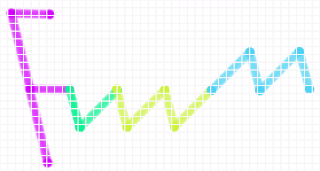

The logos can be seen at http://www.c-sait.net/fvwm/, they were all made using The Gimp.
I tried to make simple logos but with a modern design. They look like they were made using a construction set. Square shapes represent the windows managed by fvwm.
This first one is basic. It introduces the logo.

Some color variations and shading effects.

Sunny version.

In next logo, F could mean Floating. It is evokating the sea.

The same one with a background representing water on which the logo is floating.